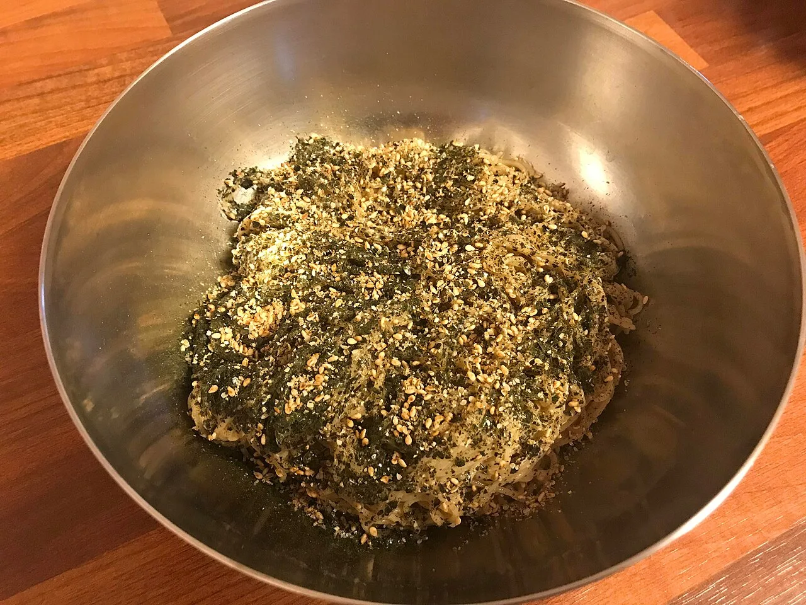

면은 차갑기보다 맑아야 합니다

들기름 막국수는 양념이 복잡하지 않습니다. 그래서 면 삶기가 거의 절반입니다. 메밀면은 오래 삶으면 표면이 쉽게 무르고, 덜 삶으면 가운데가 딱딱하게 남습니다. 포장지 시간보다 20초 정도 먼저 한 가닥을 꺼내 씹어 보고, 가운데가 부드럽게 끊기는 순간에 건지는 편이 좋습니다. 삶은 뒤에는 찬물에 충분히 헹궈 전분기를 빼야 합니다.
다만 무조건 얼음물에 오래 담그면 향이 죽을 수 있습니다. 면은 차갑되 물맛이 배지 않게 해야 합니다. 마지막에는 체에 밭쳐 물기를 털고, 손으로 가볍게 눌러 남은 물을 빼 주세요. 물기가 많으면 들기름 향이 흐려지고 간장이 겉돕니다. 들기름 막국수의 첫 번째 비법은 양념장이 아니라 젖지 않은 면입니다.
간장은 적고 들기름은 늦게 넣습니다
기본 비율은 1인분 기준 간장 1큰술, 쯔유나 참치액 약간, 설탕 또는 올리고당 아주 조금, 식초 몇 방울 정도로 시작하면 됩니다. 들기름은 1큰술 반에서 2큰술 사이가 좋습니다. 간장을 많이 넣으면 메밀 향보다 짠맛이 먼저 올라옵니다. 들기름 막국수는 강한 양념으로 먹는 음식이 아니라 고소한 향과 짭짤함의 경계를 맞추는 음식입니다.
들기름은 가능하면 마지막에 넣습니다. 면에 간장 양념을 먼저 가볍게 입히고, 먹기 직전에 들기름을 둘러 섞으면 향이 더 살아납니다. 미리 오래 비벼 두면 면이 기름을 먹고 무거워집니다. 가족이 함께 먹을 때도 큰 볼에 오래 두지 말고, 1인분씩 바로 섞어 내는 편이 훨씬 좋습니다.
김가루와 깨가 소스 역할을 합니다
들기름 막국수에서 김가루와 깨는 장식이 아닙니다. 김은 바다 향과 짭짤함을 더하고, 깨는 고소함을 두껍게 만듭니다. 조미김을 쓰면 간장 양을 조금 줄이고, 무염 김을 쓰면 소금을 아주 살짝 더해도 됩니다. 김은 너무 곱게 부수기보다 손으로 거칠게 찢어야 씹을 때 향이 살아납니다.
깨는 통깨와 간 깨를 섞으면 좋습니다. 통깨는 씹는 향을 만들고, 간 깨는 면에 붙어 소스처럼 작동합니다. 여기에 쪽파를 얇게 썰어 넣으면 기름진 느낌이 정리됩니다. 매운맛을 원하면 고춧가루보다 청양고추를 아주 잘게 다지는 편이 들기름 향을 덜 해칩니다. 재료가 적을수록 각 재료의 역할이 선명해야 합니다.
비비는 순간부터 맛이 줄어듭니다
들기름 막국수는 만들어 두는 음식이 아닙니다. 면을 삶고 헹군 뒤 물기를 빼고, 양념을 넣고, 들기름과 김가루를 더한 순간부터 가장 맛있습니다. 시간이 지나면 면이 양념을 빨아들이고 김이 눅눅해집니다. 그래서 손님상에 낼 때는 재료를 준비해 두고 마지막 1분에 비벼 내는 방식이 좋습니다.
곁들이는 반찬은 자극적인 것보다 산뜻한 것이 어울립니다. 오이채, 무절임, 백김치, 삶은 달걀 반 개 정도면 충분합니다. 고기를 올리고 싶다면 불고기보다 얇게 구운 닭가슴살이나 수육처럼 향을 방해하지 않는 재료가 좋습니다. 들기름 막국수는 많이 올릴수록 맛있는 음식이 아니라, 덜어낼수록 향이 또렷해지는 음식입니다.
한 그릇 맛은 마지막 30초에 갈립니다
들기름 막국수는 재료가 적어서 실패 원인도 분명합니다. 면이 불었거나, 물기가 남았거나, 간장이 많았거나, 들기름 향이 오래 공기에 닿았을 때 맛이 흐려집니다. 그래서 조리 순서는 단순해야 합니다. 면을 삶는 동안 김과 깨, 쪽파를 준비하고, 면이 헹궈지는 순간부터 빠르게 비벼 내야 합니다.
메밀면은 찬물에 헹군 뒤에도 손끝으로 상태를 봐야 합니다. 겉이 미끈하면 전분기가 남은 것이고, 너무 오래 문지르면 면이 끊어집니다. 차가운 물로 여러 번 헹구되 마지막에는 물기를 확실히 빼야 합니다. 그릇 바닥에 물이 고이면 들기름 향이 묽어지고 간장 맛도 흐릿해집니다.
양념은 작은 그릇에서 먼저 섞어 보는 편이 좋습니다. 간장과 단맛, 산미가 따로 놀지 않게 만든 뒤 면에 넣으면 실패가 줄어듭니다. 들기름은 양념에 미리 섞어도 되지만 향을 살리려면 마지막에 두르는 쪽이 낫습니다. 좋은 들기름을 쓸수록 불필요한 단맛과 마늘을 줄이는 편이 깔끔합니다.
고명은 많이 올리는 것보다 방향을 정하는 것이 중요합니다. 김가루를 넉넉히 쓰면 짭짤하고 고소한 맛이 강해지고, 오이를 넣으면 산뜻해집니다. 삶은 달걀은 부드러운 포만감을 더하지만 들기름 향을 조금 눌러 줄 수 있습니다. 손님상이라면 고명을 따로 두고 각자 섞게 해도 좋습니다.
남은 면으로 다시 만들 때는 양념을 추가하기보다 물기를 먼저 확인하세요. 면이 서로 붙었다면 찬물에 아주 짧게 풀고 다시 물기를 빼야 합니다. 들기름 막국수는 화려한 기술보다 타이밍의 음식입니다. 마지막 30초에 면, 기름, 김가루가 동시에 만나면 집에서도 식당 못지않은 향이 납니다.
관련 영상
맛집보다 더 맛있는 메밀 들기름 막국수
맛을 안정적으로 내려면 면 물기, 간장 양, 들기름 넣는 타이밍, 김가루 상태만 기억하면 됩니다. 이 네 가지가 맞으면 집에서도 가볍고 고소한 들기름 막국수를 충분히 만들 수 있습니다.
집에서 들기름 막국수를 만들 때 가장 좋은 기준은 한입 먹었을 때 짠맛보다 고소한 향이 먼저 오는지입니다. 짜게 느껴지면 간장을 줄이고 김가루를 늘리는 편이 좋고, 느끼하면 식초 몇 방울이나 오이채로 정리하면 됩니다. 들기름은 오래된 냄새가 나면 아무리 좋은 면을 써도 맛이 살지 않습니다. 작은 병을 사서 빨리 쓰고, 빛을 피해 보관하는 것이 좋습니다. 이 음식은 대단한 손맛보다 재료의 상태와 순서가 중요합니다. 면을 맑게 헹구고 바로 비비면 실패 확률이 크게 줄어듭니다.
처음 만드는 사람이라면 양념을 한 번에 다 넣지 말고 절반만 먼저 넣어 보세요. 면이 가진 수분과 김가루의 짠맛에 따라 필요한 간이 달라집니다. 비빈 뒤 10초만 기다렸다가 다시 맛을 보면 부족한 부분이 더 잘 보입니다. 고소함이 부족하면 들기름을 조금, 싱거우면 간장 몇 방울, 답답하면 식초나 오이로 균형을 맞추면 됩니다. 들기름 막국수는 레시피를 외우는 음식이라기보다 마지막에 입맛으로 조율하는 음식입니다.
입맛에 맞게 한 번 조율해 보면 다음부터는 훨씬 쉬워집니다. 들기름 막국수는 정답 비율 하나보다 면의 물기와 기름 향을 기억하는 감각이 더 오래 남는 음식입니다.
먹기 직전에 그릇을 차갑게 두면 면 온도가 더 안정됩니다. 다만 너무 차갑게 얼리면 들기름 향이 덜 올라올 수 있으니 냉장 정도가 적당합니다. 마지막에 김가루를 올리고 바로 젓가락으로 크게 섞어 내면 면 사이로 향이 골고루 퍼집니다. 작은 준비 하나가 한 그릇의 인상을 바꿉니다.